“If it is the first, the best, or the only one, we wanted it in our America250 celebration,” said John Morris, President & CEO of Peoria Riverfront Museum.
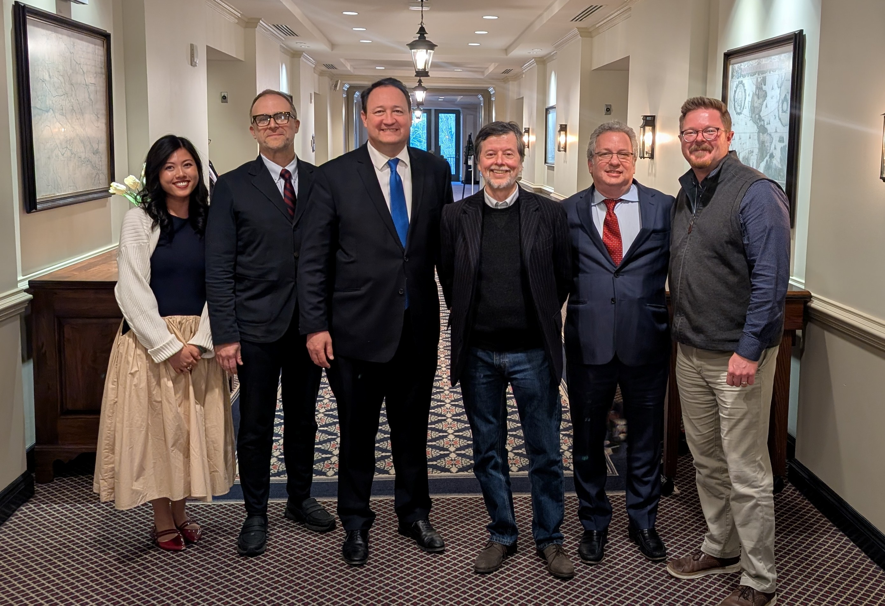
To view some of our country’s most significant historical documents and objects, head downstate to Peoria Riverfront Museum. The Promise of Liberty, guest-curated by renowned documentary filmmaker Ken Burns, uses a remarkable collection of authentic documents not only as artifacts of the past but also as tools for the present, in celebration of America 250. Just two and a half hours from Chicago, the museum has assembled an exhibition hailed by The New York Times and other reviewers as among the best in the nation.
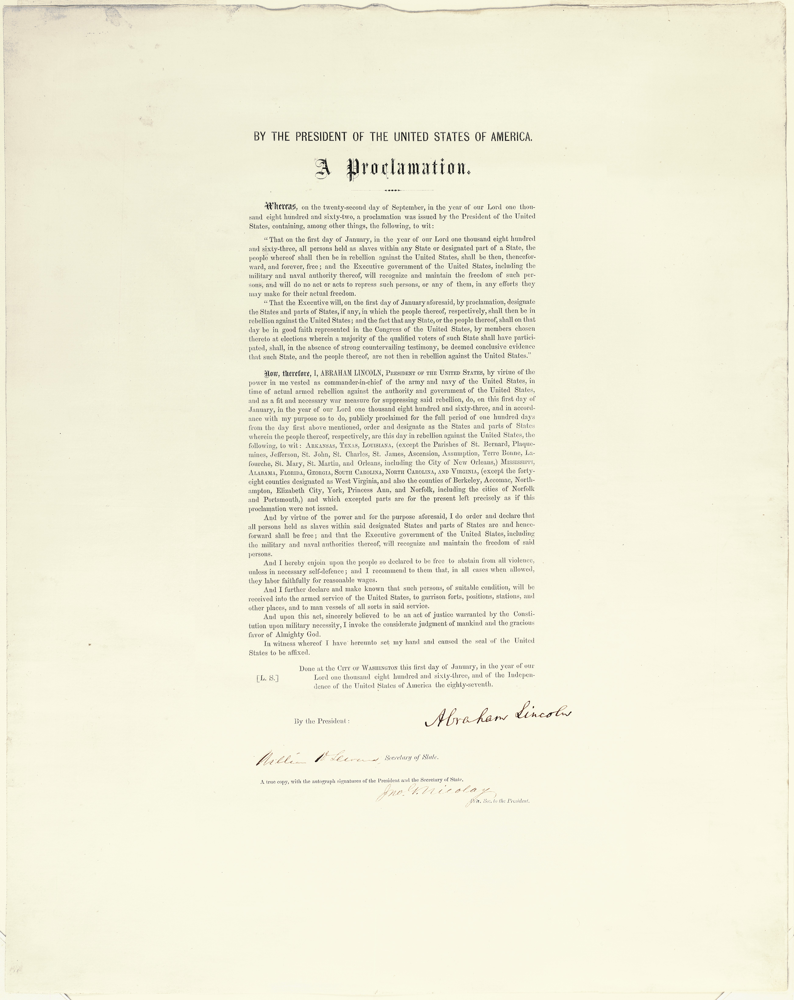
Touring with John Morris, among the most affable and knowledgeable museum presidents anywhere, we felt the museum’s passion for our country and what the light-filled Peoria Riverfront Museum is doing for its city.
“At first, it is hard to get out of presentism, the immediate moment, the social media, but to celebrate our 250th, you must look at America as the most extraordinary land of opportunity. It is the first-ever experiment with natural rights and a place of flourishing ideas,” Morris said. “As Ken Burns says, ‘there is just us, not them. With all our differences, we share this experiment.’”
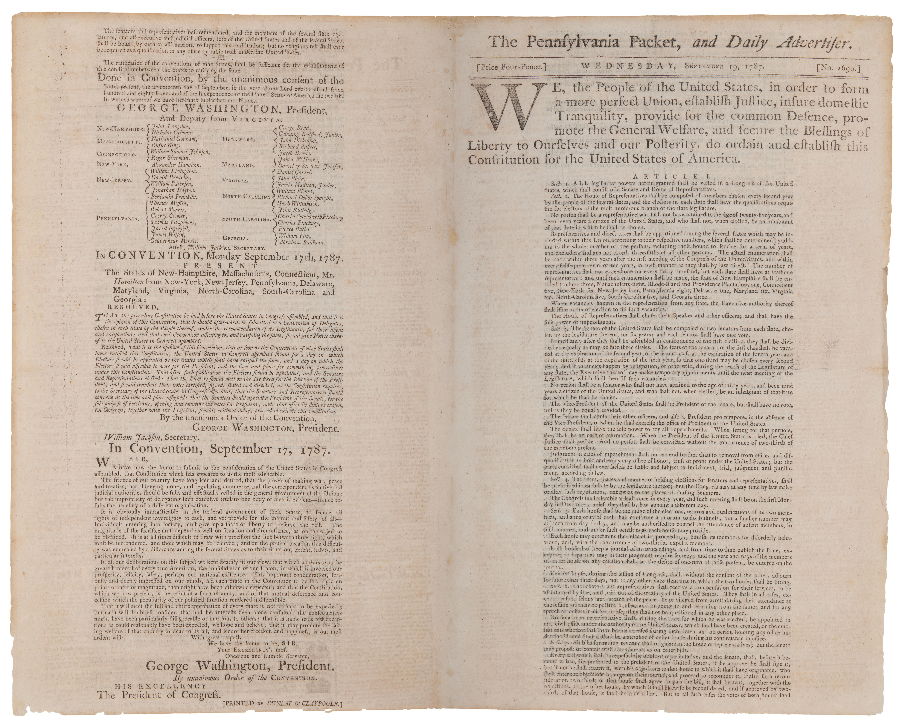
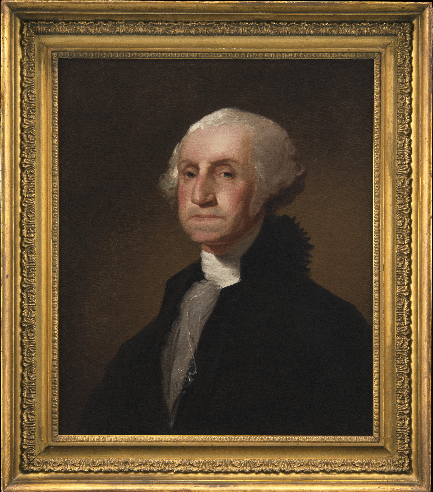
Morris told us: “Our mission at the Riverfront Museum is to unleash the full talent and genius of every individual in our community so that everyone can be the best version of themselves. We want everything we do to be about building confidence and sparking learning.”
The Peoria Riverfront Museum is exciting from the moment you walk in, with the beautiful Illinois River at your shoulder and nearby Grandview Drive, which Teddy Roosevelt famously called ‘the world’s most beautiful drive’ in 1910. Outside the exhibition halls, school choirs and bands rehearsed, showtimes drew visitors to the Dome Planetarium, and advertisements for upcoming films in the Giant Screen Theater were on display, along with music events that are part of “Peoria Plays America.”

We heard Morris coined the phrase “the City of Gratitude” for Peoria, and we wanted to learn more.
“This city has always been very giving, and giving is an action verb. We have the reputation to punch way above our weight,” he said. “The Museum has visitors that are coming from around the country, and donor giving is up 1,000 percent,” Morris said.
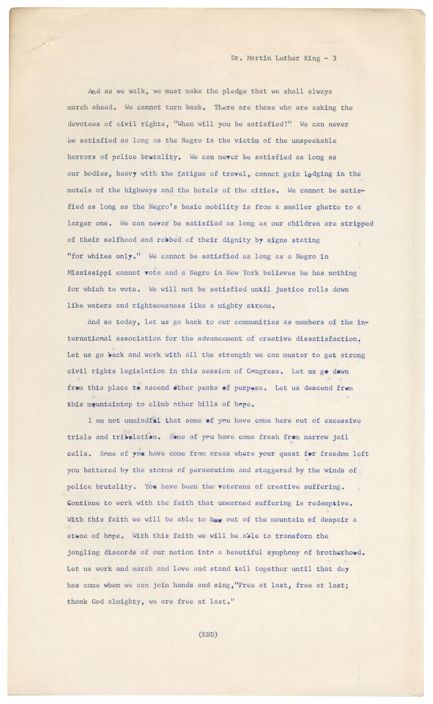
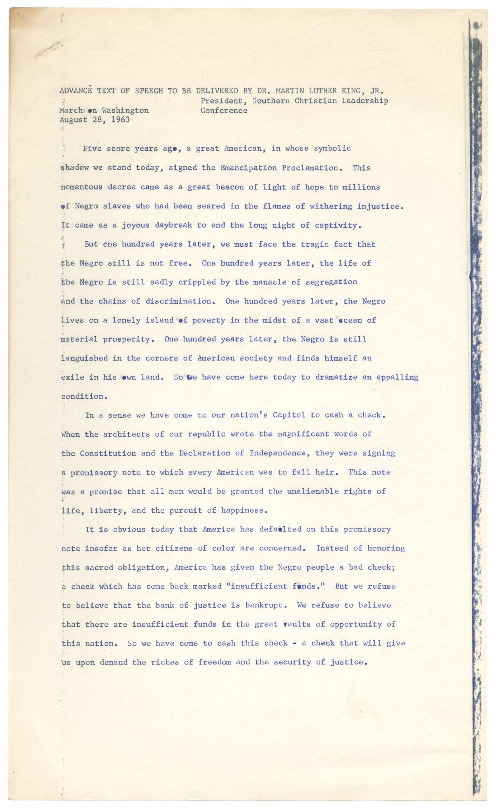
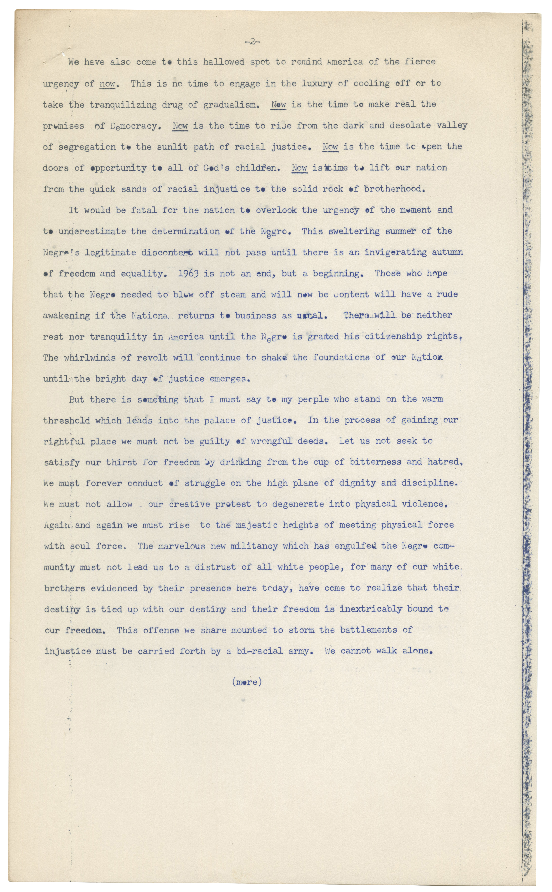
Beginning with a broadside of the 1776 Declaration of Independence, and ending with a copy of Martin Luther King Jr.’s I Have a Dream speech in which he referred to the Declaration as a “promissory note” for all Americans, The Promise of Liberty entices visitors to keep coming back. There is just so much to learn.
Museum leaders involved Ken Burns two years ago when Burns exhibited his rare quilt collection there. A hologram of Burns greets visitors in the exhibition. “He has been an inspired guidepost to us,” Morris said.
At an America 250 conference at Colonial Williamsburg three years ago, John Morris and Chief Curator Bill Conger found Seth Kaller, a leading expert and dealer of rare documents for institutions and individuals. Kaller played a major role in building the collection of the Gilder Lehrman Institute of American History, considered one of the nation’s most important repositories of American historical documents.
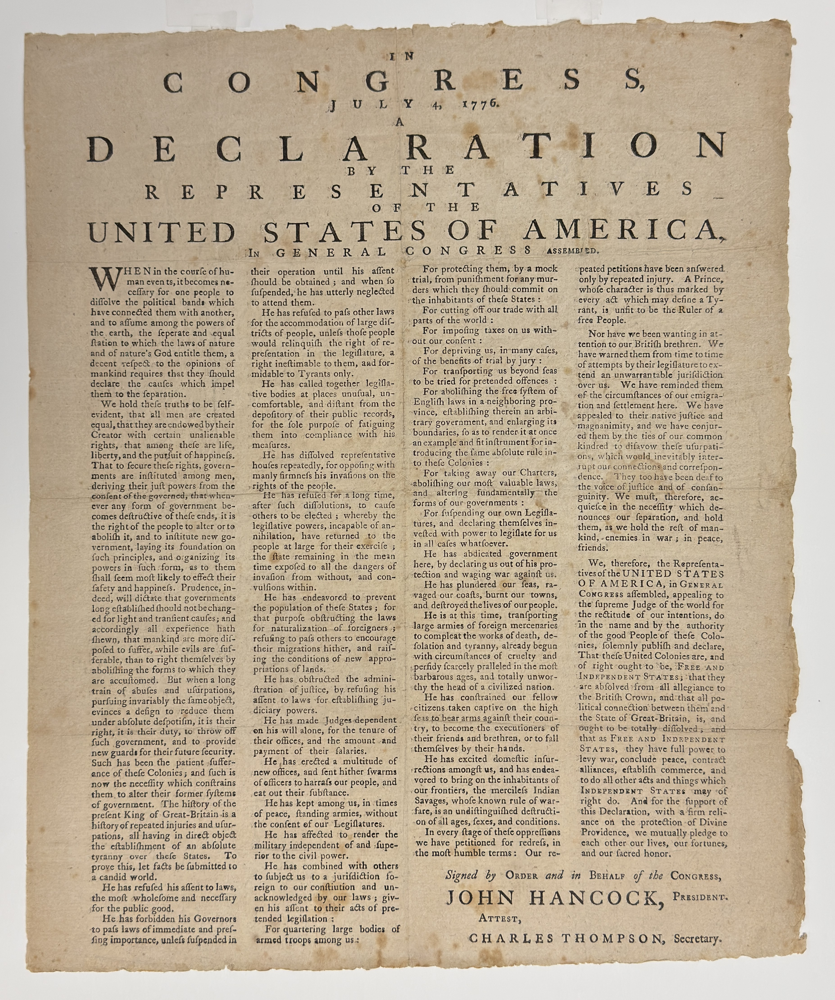
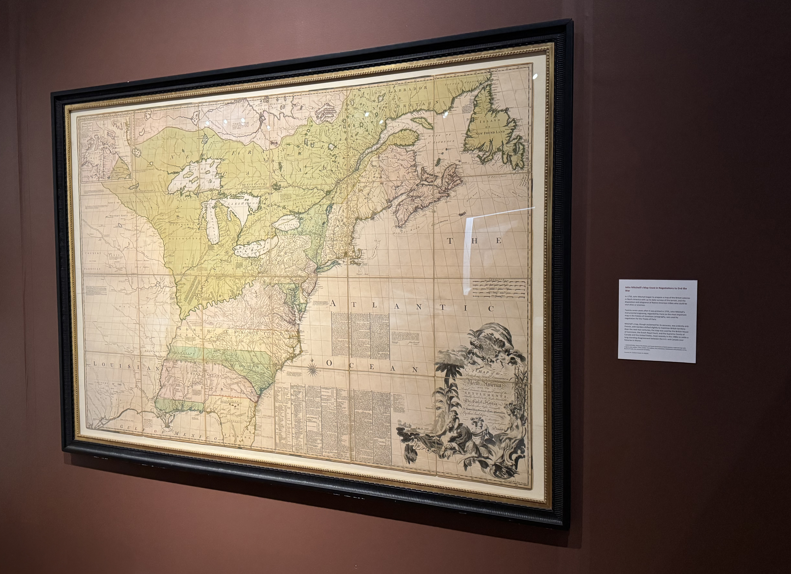
Conger said, “While it is impossible to state how important Seth’s access to the nation’s most important documents has been, it is his unmatched depth of knowledge and his ability to contextualize which has put conceptual ‘muscle’ into the exhibition.”
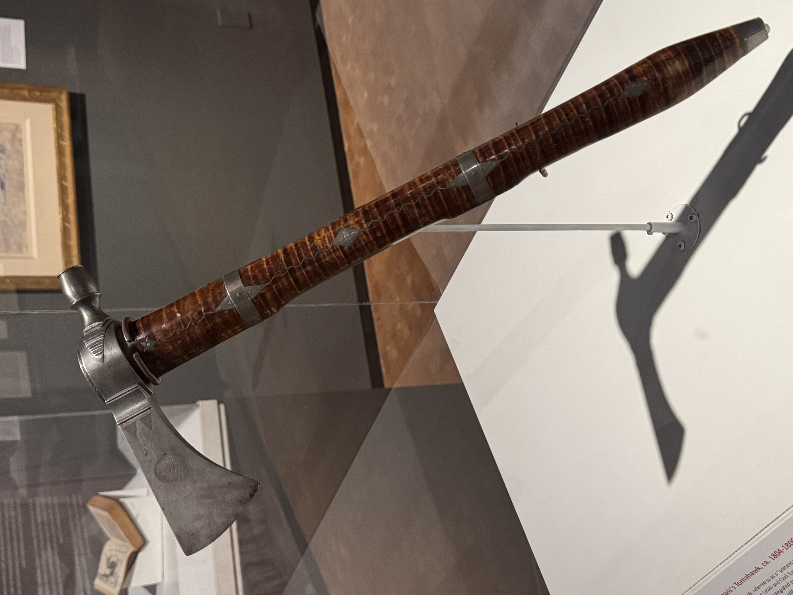
As Zac Zetterberg, the Curator of Art and Center for American Decoys, walked us through the galleries, he pointed out the Meriwether Lewis tomahawk, a favorite among the many students who visit the museum daily. All school children in Illinois, K–12, have access to the museum for free in 2026! Over 10,000 students have already toured the exhibition.
Zetterberg told us: “This decorated pipe tomahawk serves as an axe and a smoking pipe, giving it both practical and diplomatic significance. It is one of the few surviving artifacts from the Lewis and Clark expedition. It is a national treasure.”
Morris pointed out Peoria and Illinois artifacts in the exhibition.
Morris said, “It is important to tell America’s story through local and state history. We wanted to differentiate from the New York and New England story. There was trading in the Peoria area as early as 1718, and did you know Peoria is the oldest continuously settled place in the state of Illinois?”
“Most importantly, we wanted to tell the story of a speech made by young Abraham Lincoln on October 16, 1854, at the Peoria Courthouse, the single most important speech ever given in central Illinois. Every person living in the City of Gratitude, the Greater Peoria region, and in the United States of America should know about it.”
“In Peoria, Lincoln drew the line against the morality and legality of slavery for the first time in a full-throated exposition, standing up to the 5’4” Little Giant Stephen Douglas, whose power in the US Senate was enormous. In Peoria, Lincoln philosophically explained why individual liberty, as defined in our founding documents, supercedes democracy. The act of voting for something is a sacred value of our free society, but in no case should a popular vote be allowed to undo those liberties promised to all of us. Despite thousands of years of the existence of the immoral institution of slavery in every corner of the globe, including the new nation “conceived in liberty,” Lincoln gave his revolutionary argument. No man (or woman) can ever be a slave to another.”
“There are many reasons Peoria can claim national historic importance, but none greater than this speech. The words of an unusually tall, 6’4”, mostly unknown former one-term Whig Party U.S. congressman revitalized his career, fueled a philosophical movement, and ultimately propelled the promise of liberty into emancipation for all.”
“Without the Peoria speech and the principles laid out in it, there would never have been Lincoln’s Emancipation Proclamation. It is easily arguable. There would never have been Lincoln as history knows him.”
Included in the exhibition is Father Marquette’s ceremonial vestment stole from 1673, lent from the Catholic Diocese of Peoria. The influence of the Marquis de Lafayette, who led troops during the Revolution, appears in a stoneware charger bearing his name which commemorated his visit to all the states in the US in 1824 and 1835, including Shawneetown, Illinois on the Ohio River.
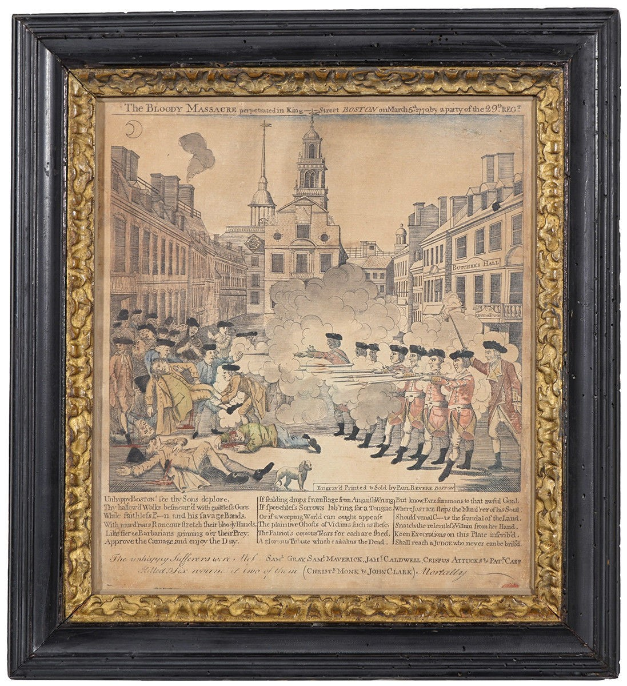
We were impressed with the premise of the exhibition shared with visitors:
“When the Signers of the Declaration of Independence declared that ‘all men are created equal,’ they knew those words described an aspiration, not a reality. Even the most forward-thinking Founders were shaped by the limits and prejudices of their time. Yet they risked everything for a revolutionary idea: that government exists to serve its people, not rule over them—and that liberty belongs to all.”
The Promise of Liberty invites visitors of all ages to explore that daring experiment and its lasting impact. This powerful exhibition looks honestly at America’s aspirations, achievements, contradictions, and unfinished work, inspiring today’s citizens—and tomorrow’s—to imagine a stronger democracy and a more inclusive society. It is not just an exhibition about history. It’s an invitation—to reflect, to discuss, and to participate.
At the heart of the exhibition is a simple but enduring idea: E Pluribus Unum—Out of Many, One. America’s strength has always come from its people. From every background, ability, belief, identity, and walk of life, generations have shaped the nation’s evolving promise of freedom and equality.
Democracy is presented as a form of technology—a system of organizing knowledge to solve problems, balance competing interests, and adapt over time. Imperfect and challenging, yes—but still humanity’s most powerful framework for self-government.
Among the diverse objects on display are wonderful 20th Century objects, including Norman Rockwell’s study for his Freedom of Worship painting, women’s suffrage documents, Jackie Robinson’s signed 1949 Brooklyn Dodgers contract, a letter from Einstein to President Franklin Roosevelt warning of the potential dangers of nuclear fission, and WPA posters.
The Promise of Liberty runs until January 3, 2027. For more information about the exhibition and all the other fine offerings at Peoria Riverfront Museum visit peoriariverfrontmuseum.org.